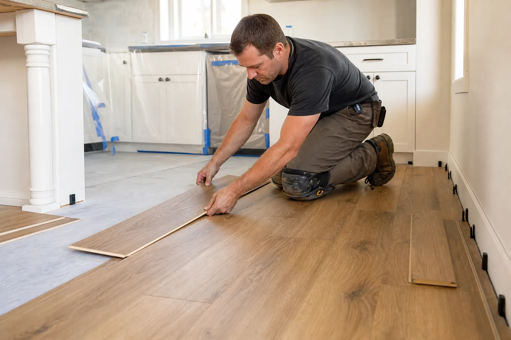
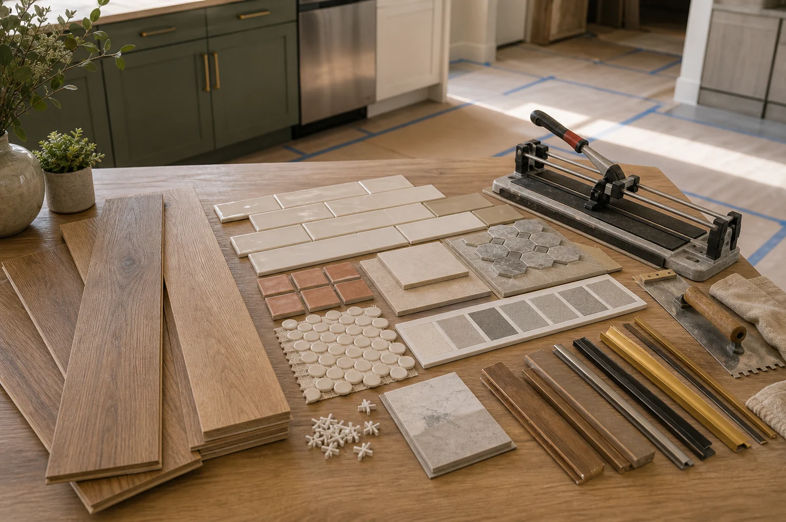

Flooring Connections for Durable Everyday Kitchens
Kitchen floors need to handle spills, appliance movement, traffic, and transitions into nearby rooms. We help route flooring requests to independent local providers.
Included Planning Topics
Flooring should be planned around existing cabinets, appliances, doors, trim, and the condition of the subfloor.
- Review of existing flooring, removal needs, subfloor flatness, squeaks, damage, and moisture concerns.
- Material conversations for tile, engineered wood, luxury vinyl plank, laminate, or natural stone.
- Transitions at dining rooms, hallways, thresholds, dishwasher areas, and toe-kicks.
- Baseboard, shoe molding, appliance movement, underlayment, grout, sealing, and cleanup expectations.
Subfloor First
Ask whether the provider checks for uneven areas, water damage, old adhesive, and structural issues before installing new flooring.
Transitions
Confirm how height changes, door swings, thresholds, and adjacent flooring will be handled.
Durability
Discuss slip resistance, cleanability, water exposure, pets, children, heavy appliances, and warranty requirements.
Tell Us About Your Existing Floor
Photos, rough room size, current material, and desired finish help providers understand the project faster.
- Add photos of the current kitchen.
- Include rough measurements or room size.
- Share timing, budget range, and priorities.


Flooring Needs Subfloor Review and Transition Planning
Kitchen flooring must work around cabinets, appliances, moisture, thresholds, and daily traffic. A clearer request helps providers understand both material choice and installation conditions.
Prepare Before Contact
- Current flooring material and age
- Photos of thresholds and appliance areas
- Approximate square footage
- Preferred material and durability needs
Ask the Provider
- Whether subfloor repair may be needed
- How appliances and cabinets are protected
- How transitions and trim are finished
- What curing or acclimation time is required

Best for homeowners comparing tile, engineered wood, luxury vinyl, laminate, or other practical kitchen flooring options.
Kitchen Flooring Must Balance Durability, Transitions, and Subfloor Reality
Kitchen flooring carries daily traffic, spills, appliance movement, and cabinet transitions. A useful request should describe the current floor, subfloor concerns, adjoining rooms, appliances, and whether flooring will run under cabinets or meet existing edges.
Material fit
Water resistance, cleaning needs, comfort underfoot, slip resistance, pattern direction, and durability.
Prep needs
Removal, subfloor repair, leveling, moisture review, underlayment, and old adhesive concerns.
Transitions
Doorways, dining areas, islands, toe-kicks, baseboards, stairs, and adjacent flooring height.
Scheduling
Appliance movement, cabinet protection, room access, cure time, and cleanup expectations.
Before You Speak With a Provider
- Photograph floor damage, squeaks, soft spots, and transitions into nearby rooms.
- Ask whether appliances must be disconnected or moved by a separate provider.
- Confirm how baseboards, toe-kicks, and thresholds will be finished.